Projects
ArcGIS: Brooklyn Youth Parks Project (Spring 2024)
Project Scope & Goal: Developed the Brooklyn Youth Parks Project to increase green space access for children in high-density urban areas.
GIS Analysis: Utilized ArcGIS to analyze New York City boroughs, neighborhoods, parks, and demographics.
Data-Driven Approach: Identified areas lacking parks within a 0.25-mile radius and prioritized regions with over 2,000 residents under 18.
Targeted Community Impact: Determined Borough Park as a high-priority area needing a new park.
Advocacy for Environmental Equity: Promoted the importance of nature access for urban youth to support learning, creativity, and environmental empathy.
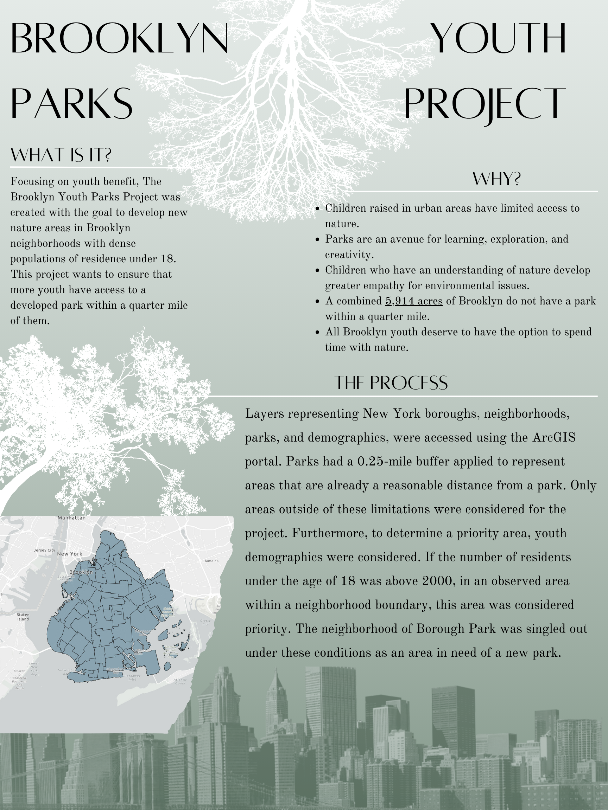
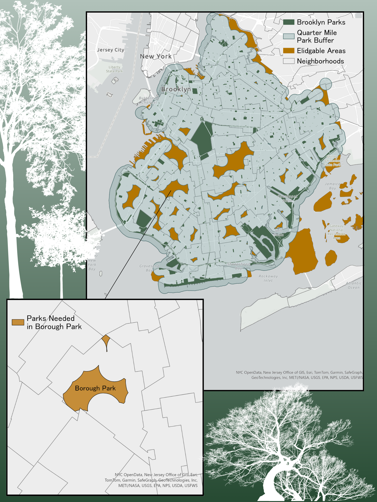
Quantitative Reasoning Labs Overview
The following projects were completed as a part of the curriculum for ESS 330: Quantitative Reasoning for Ecosystem Science at Colorado State University during the Spring 2025.
Lab 1
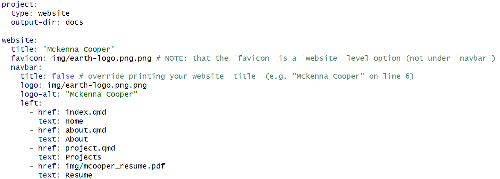
In this lab, I learned how to create and publish a personal website using Quarto, RStudio, and GitHub Pages. I gained foundational skills in web development, including writing in Markdown, customizing YAML headers, and applying CSS, Sass, and a favicon to personalize the design and structure of my site. This process allowed me to reflect on my accomplishments and goals throughout my undergraduate education while thoughtfully curating a unique digital portfolio. The final product not only showcases my academic and professional journey but also serves as a dynamic platform I can continue to develop and share with prospective employers, mentors, and collaborators in the future.
Lab 2
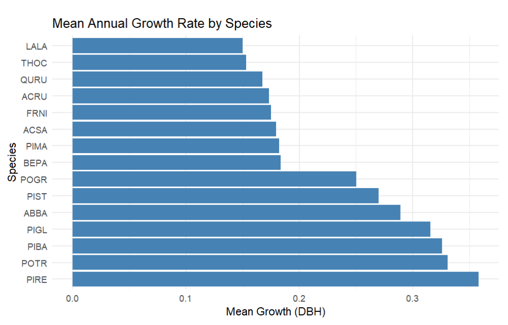
I learned how to manipulate and transform data in R using the dplyr package. I became familiar with key functions such as filter(), slice(), arrange(), select(), mutate(), and summarize() to filter, reorder, modify, and summarize datasets. Using a Minnesota tree growth dataset, I practiced tasks like subsetting data, sorting, renaming columns, creating new variables, and summarizing statistics. I also explored advanced features like grouping data, using conditional statements with case_when(), and counting rows with n(). The lab helped me understand how to efficiently chain multiple operations with the pipe operator (%>%), which streamlined the process of data wrangling and analysis.
Lab 3
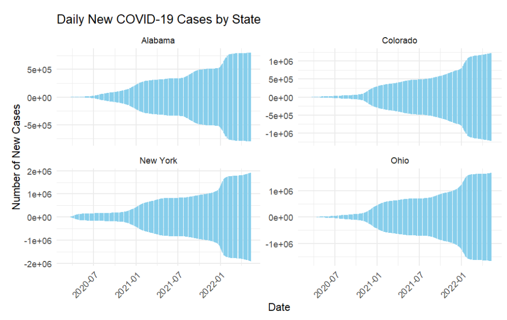
I learned how to work with COVID-19 data for data wrangling and visualization tasks. Using the data set curated by the New York Times, I practiced filtering, grouping, and summarizing data, as well as handling population data from the Census to normalize the COVID data. I explored how to calculate new cases, cumulative cases, and death tolls at the county level in Colorado. I applied methods like lag and diff to calculate daily new cases and used rolling averages to smooth trends over time. I also visualized the data, creating tables and plots to present the most affected counties and track the virus’ movement. I learned how to compute weighted mean centers for COVID-19 cases and deaths to better understand the spatial dynamics of the outbreak. Additionally, I worked on using the flextable package to generate well-organized tables and ggplot2 to create insightful visualizations, including faceted bar plots and time-series plots. This lab helped me gain hands-on experience with integrating multiple data sets, processing time-sensitive data, and communicating findings effectively through both tables and visualizations.
Lab 4
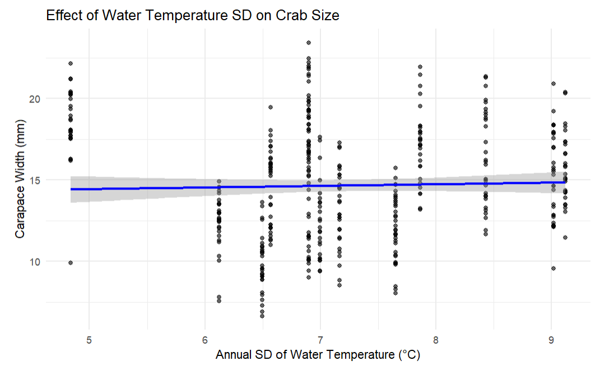
In Lab 4, I learned how to conduct basic statistical tests in R, including chi-square tests, t-tests, and correlation tests. I applied these tests to data from the Long-Term Ecological Research (LTER) Network, specifically focusing on Cutthroat trout and salamander species in Mack Creek, Oregon. I explored relationships between categorical variables, such as forest and channel types, using chi-square tests. I compared the mean weights of species in clear-cut versus old-growth forests using t-tests and examined the relationship between length and weight for different species using correlation tests. I also learned the importance of checking assumptions like normality and variance equality before conducting these tests.
Lab 5
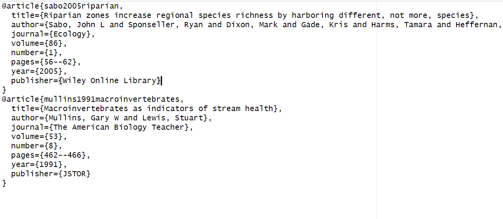
In Lab 5, I learned how to set up a Quarto manuscript for our final project proposal. I worked with my team to create a structure for our project, where we added our team members in the YAML file and prepared the necessary files, such as references.bib for citations. We also learned how to format citations using Google Scholar and BibTeX, and integrate these references into our manuscript using Quarto’s citation system. Additionally, we began ideating for our final project by proposing research ideas, detailing their significance, objectives, methods, and expected outcomes. This lab taught me how to organize a collaborative project, manage citations efficiently, and present research proposals in a structured format.
Lab 6
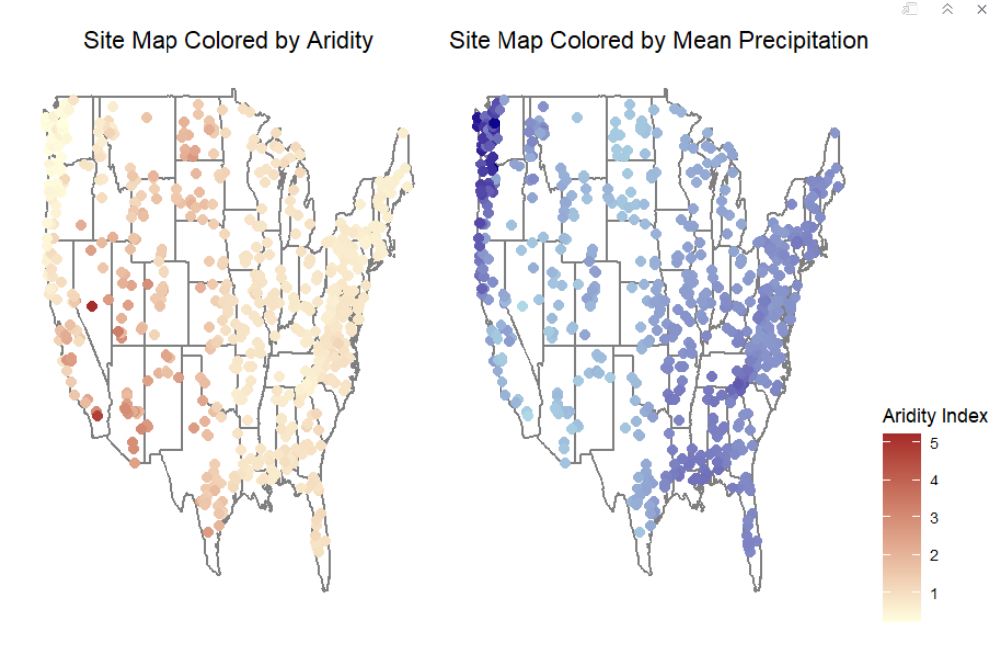
In this lab, I learned how to apply the tidymodels framework in R for predictive modeling in hydrology, using the CAMELS data set. I explored the relationships between various environmental factors such as aridity, rainfall, and stream flow (q_mean) and examined how transformations, like log transformations, could improve the linearity of these relationships for model building. Additionally, I practiced using tools like data splitting, cross-validation, and model evaluation to prepare for building a predictive model for stream flow. The lab also involved creating map outputs to visualize predictions of stream flow across different geographic locations, allowing me to interpret the model results in a spatial context. The lab helped me gain hands-on experience in integrating data pre-processing, visualization, and model evaluation in a real-world environmental context.
Lab 7
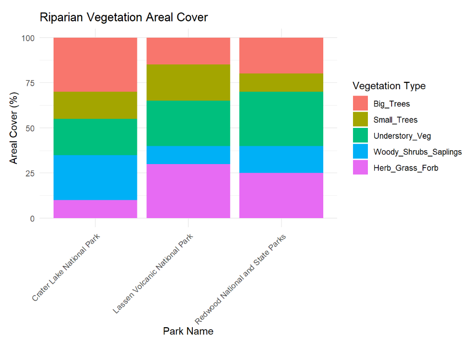
Lab 7 continued the setup for our final project, building on the work we began in Lab 5. My team and I focused on narrowing our research question and selecting data sources, which allowed us to draft the introduction, background, and motivations for our project. We provided an overview of the problem we are addressing and outlined our proposed methods. This included conducting exploratory data analysis, creating visualizations, and considering the need for data cleaning and manipulation. We also identified our preliminary analysis methods, potential challenges in the data and methods, and any additional data we might need. The lab helped us organize our work, refine our approach, and anticipate any roadblocks ahead.
Lab 8
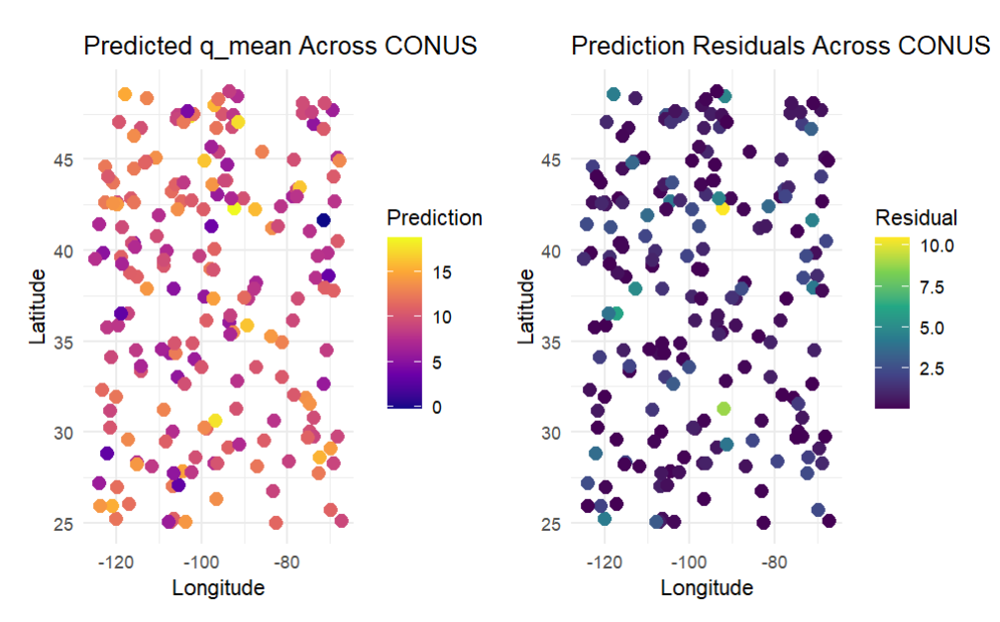
In this lab, I learned how to implement a complete machine learning pipeline for a regression problem using the CAMELS data set. I gained hands-on experience with data preparation, including cleaning and transforming the data set, followed by splitting it into training and testing sets. I learned to create and apply feature engineering techniques through recipes and resample the data for cross-validation. The lab emphasized building and testing multiple machine learning models, followed by selecting and tuning the best-performing model. I explored hyper-parameter tuning through grid search, evaluated model performance using metrics like RMSE and R-squared, and visualized results through plots. Lastly, I learned how to finalize a model and assess its performance on test data, culminating in a map of predictions and residuals. This lab gave me a comprehensive understanding of the machine learning workflow from start to finish.
Lab 9
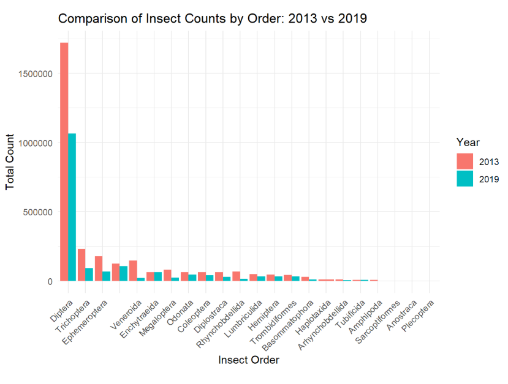
Lab 9 focused on advancing our final project by drafting the results and discussion sections. My team and I continued working in the Manuscript created in Lab 7, refining our methods and analysis. We began drafting the results by presenting the outcomes of our data exploration and analysis, including visualizations and models. At this stage, we avoided discussing the significance of the results, focusing on presenting the data. We also started drafting the discussion, addressing the implications of our findings, their significance, and the limitations of our analysis. We outlined how our results relate to the broader field of data science and proposed next steps and open questions for future research. This lab allowed us to refine our analysis and start tying our findings into the larger context of our project.
Lab 10
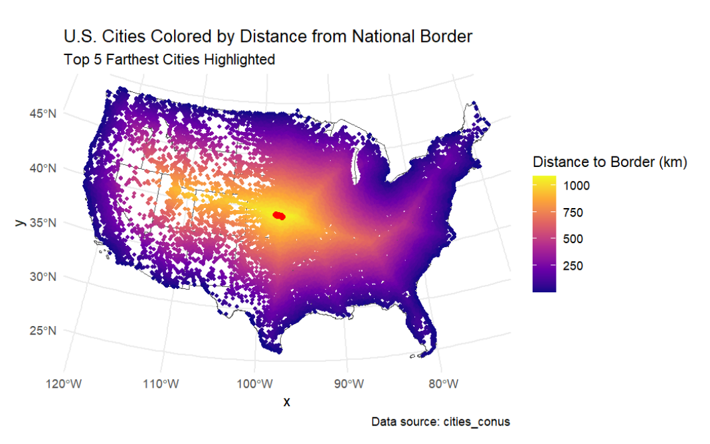
In Lab 10, I explored spatial data science concepts, including coordinate systems, distance calculations, and geographic projections. I worked with spatial data for U.S. states, cities, and national borders, using the sf package to manipulate geometries and calculate distances from cities to various borders. This included distances to the national, state, Canadian, and Mexican borders. I also visualized these distances using ggplot and created maps highlighting specific cities. Additionally, I analyzed the 100-mile “border zone” and its implications, identifying cities within this zone and calculating their populations. This lab enhanced my skills in spatial analysis, distance calculations, and geospatial visualization.
Lab 11
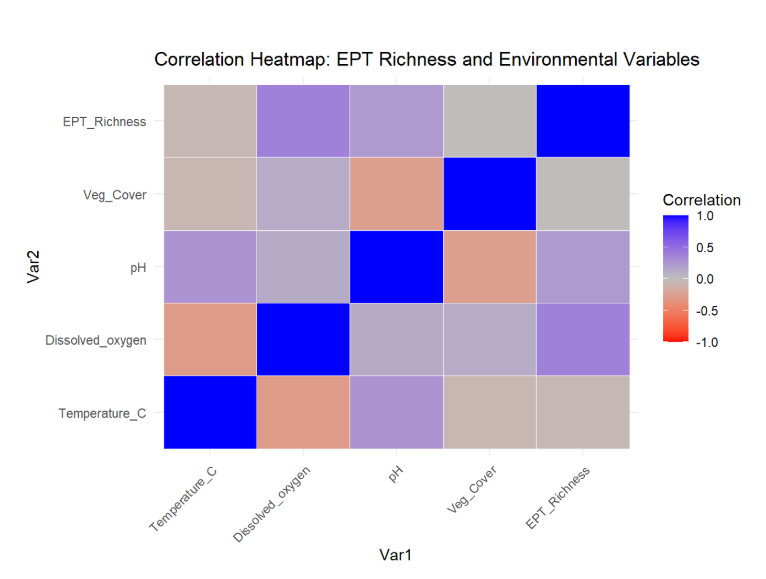
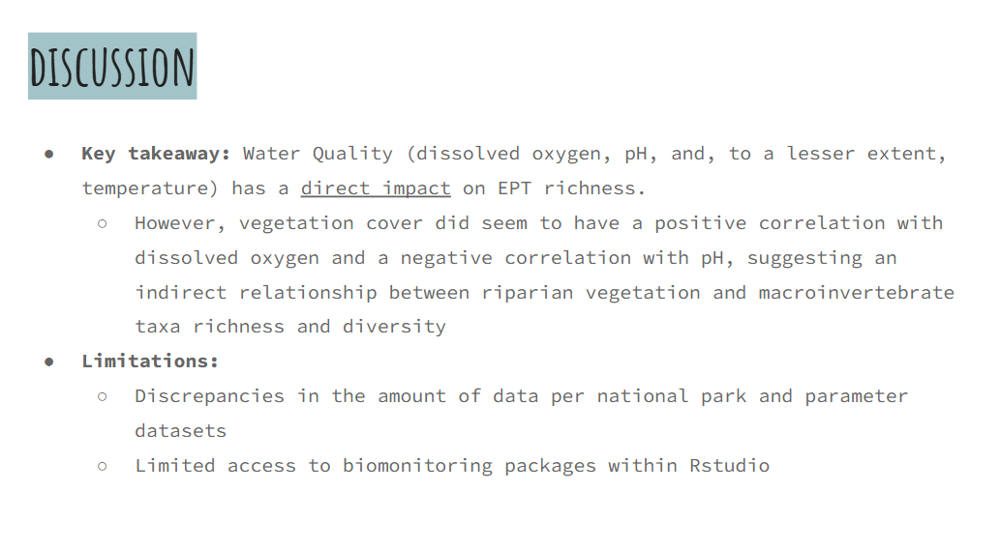
In our presentation, my group and I explored how riparian zone condition and water quality affect freshwater macroinvertebrate diversity, specifically focusing on EPT taxa (Ephemeroptera, Plecoptera, Trichoptera), which serve as sensitive indicators of aquatic ecosystem health. Using data from Lassen Volcanic National Park, we found that water quality variables, particularly dissolved oxygen, had the strongest correlation with EPT richness. While vegetation cover was the least directly correlated, it showed indirect links by influencing dissolved oxygen and pH levels. Our analysis highlights the complexity of interactions between habitat structure and biotic communities, emphasizing the importance of maintaining riparian integrity to support biodiversity.
Presented by: Sarah Culhane, Mckenna Cooper, & Archer Goodman (⚔ The TidyVerse Keepers ⚔)